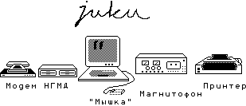
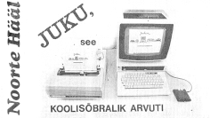
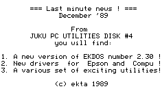

JUKU mõju Eesti infoühiskonnale ei saa alahinnata.
Pärast seda, kui 1976. aastal loodud arvutustehnika erikonstrueerimisbüroo EKTA teadusdirektor Harry Tani pani töökojaks kohandatud Teaduste Akadeemia aktusesaalis "omaenda kätega" kokku Eesti esimese mikroarvuti MIKI, polnud enam tagasiteed. Vähem kui dekaadi pärast oldi valmis oma kogemust mikroarvutite maailmaga jagama ülejäänud ühiskonnaga ning NLKP määrus "kompuutrikirjaoskuse ja arvutiõpetuse juurutamise kohta keskõppeasutustes" andis selleks 1985. aasta märtsis ka ajendi -- ei soovitud leppida võimalusega, et Eesti koolid jäävad komputeriseerimisel viimaste hulka.
Nii otsustati veel sama aasta mais Teaduste Akadeemia küberneetikainstituudi nõupidamisel sellega seoses "vabariigis endas midagi ette võtta".
| |
|
|
märtsis NLKP määrus "kompuutrikirjaoskuse ja arvutiõpetuse" kohta —
maikuus TA KI otsus töötada sügiseks välja kooliarvuti prototüüp —
novembris demonstreeritakse kaht esimest töötavat JUKUt —
|
1985 |
 |
|
1986 |
— jaanuaris teatab "Rahva Hääl", et valmis universaalne mikroarvuti koolidele
— märtsis lisandub kooliarvuti konkurentsi TRÜs projekteeritud TARTU
— juuni kooliarvuti konkursile lisandub sideministeeriumi meeskonna ENTEL
— novembris häälestatakse esimene ESTRONi katsepartii JUKU
|
koostatakse suurem jagu tulevase kooliarvuti JUKU tarkvara ja juhendmaterjale —
aprillis ilmub "Noorte Hääle" seeria JUKU arvuti võimalustest —
RETi juhtkonna "täieliku ükskõiksuse tõttu" masstootmist ei alustata —
|
1987 |
 |
|
1988 |
— saab lõpliku kuju enamik JUKU tarkvarast ja dokumentatsioonist
— maikuus kirjutab "Eesti Kommunist" tootmise venimisest, poliitmäng küündib NSVL ministrite nõukoguni
— detsembris toodab Narva tehas BALTIJETS esimesed 40 JUKUt
|
koolid saavad endale esimesed 500 JUKUt, hakatakse välja töötama õppematerjale —
detsembris avaldatud utiliitide DISK #4 pigistab moraalselt aeguvast masinast välja viimase —
|
1989 |
 |
Kuigi JUKU prototüüp valmis juba novembriks 1985 ja tootmiseks oldi valmis 1986 alul, jõuti tegeliku masstootmiseni alles 1988. Omas ajas oli JUKU unikaalne ja "universaalse mikroarvutina" mõteldud sobima nii koolidesse kui tööstusesse, võimaldama nii tekstitöötlust, graafikat kui tabelarvutust -- arvutit taheti õpetada kasutama selle tegelikus keskkonnas, mitte abstraktselt või vaid programmeerija tehnilisest vaatenurgast.
JUKU arvutid olid algusest peale mõteldud ühenduma arvutivõrku ja NSVLis projekteeritud arvutitest kasutas JUKU esimesena sisendseadmena Arvo Elleri loodud arvutihiirt. Vähetähtis polnud ka eesmärk tagada, et arvuti suudaks töödelda eesti keelt ja suhelda eesti keeles -- nii pandi JUKUga ühtlasi alus eesti klahvistiku standarditele. JUKU väljatöötamise üheks suurimaks väljakutseks oli teha õige valik arvutitööstuse alles sündimas olevatest headest praktikatest ja standarditest.
JUKU ei tekkinud tühja koha peale ja tema eelajalukku EKTAs kuulub lisaks MIKIle veel süsteemitarkvara väljatöötamine taga vennalikult KR580VM80A protsessorit ja I41 tööstussiini jagavale SM-1800le, mida kastutati üle kogu NSVLi, ja võrgutehnoloogia arendamine tööstuse juhtimise süsteemis SATELLIIT. JUKU vahetuks kaasteeliseks oli aga ettevõtetes kasutamiseks kohandatud "vanem vend" JUSS ning hulk eripartiisid koostöös ESTRONi tehasega vahemikus 1986-1988.
Kuigi tootmisse jõudmise ajaks BALTIJETSi tehases 1988. aasta lõpul võis JUKU olla moraalselt vananenud, ei heidutanud see tehniliste huvidega kooliõpilasi, kes JUKU kuldajal 1990-1991 möödusid oma "teise kirjaoskusega" paljudest oma arvutiõpetajatest ning said tõelise kogemuse arvutimängude, tarkvara ja viiruste kirjutamisel keeltes alates Pascalist kui Assemblerini, aga ka nende oma toodete turundamisel koolis ja mujalgi.
Kuldaja tipuks võib lugeda Eesti Hariduse Arenduskeskuse õppeotstarbelise tarkvara konkurssi 1991. aasta aprillis, kus osalesid tuntud ja tundmatud JUKU rühmitused üle kogu Eesti oma vaimusünnitistega alates eri kasutajatarkvarast ja mängudest kuni JUKU ekspluateerimiseni digitaalseks helitöötluseks.
Aasta 1992 augustis tutvustab JUKUde remondi eest vastutanud informaatikakeskuse KOMPUUTER direktor Jüri Ross "Õpetajate Lehes" tõsiasja, et "edaspidi tuleb kõigil valmis olla JUKUde massiliseks mahakandmiseks, kuna need on koostatud idanaabri elektroonilistest elementidest ja -- mis veel hullem -- Bulgaaria väga kehva kvaliteediga kettaseadmetest" ning küsib: "Mida pakkuda asemele?"
"Tiigrihüppeni" on veel loetud aastad ning JUKU jääb sümboliseerima ninakate 90ndate IT-revolutsiooni algusaastaid, mil ta polnud küll arvutite tehnilises konkurentsis silmatorkavaim, kuid tegi arvutid ja programmeerimise kättesaadavaks nendele, kel oli olemas kirg, kuid puudusid vahendid -- pakkudes võimalust õppida peensusteni tundma arvutusseadmete hingeelu ning tagades selleks sobiva sotsiaalse keskkonna, pühendunumatele ka initsiatsiooni põhjatusse häkkerikultuuri.
Kooli JUKU klassis üürgav INDY ja "hamburgeriks" moondatud disketid on igatahes jätnud kustumatu jälje paljudesse Eesti infoühiskonna algusaegade tegijatesse, kel võib see väljenduda ootamatutel hetkedel ja viisidel.
|